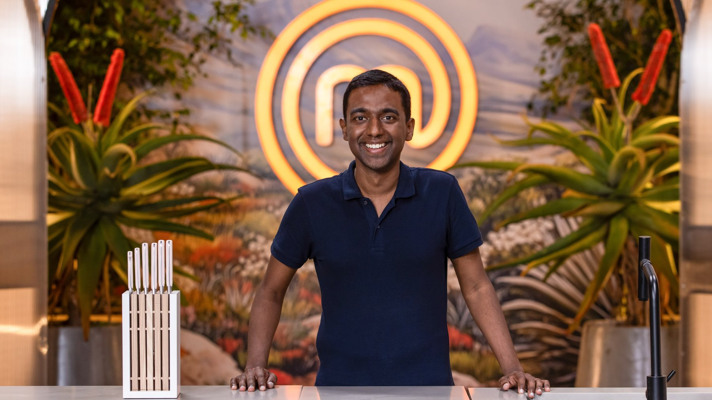
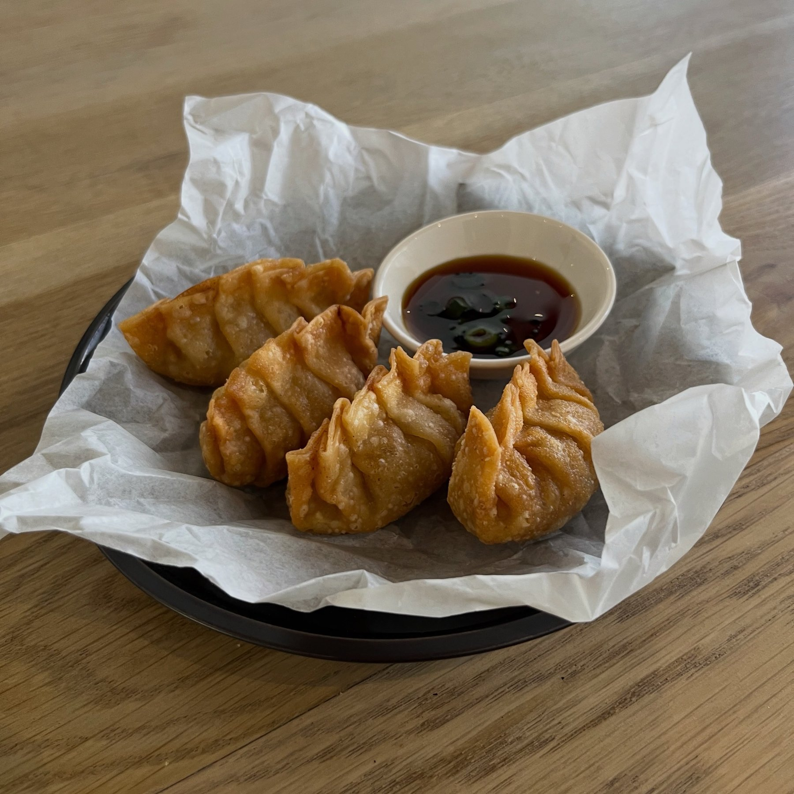
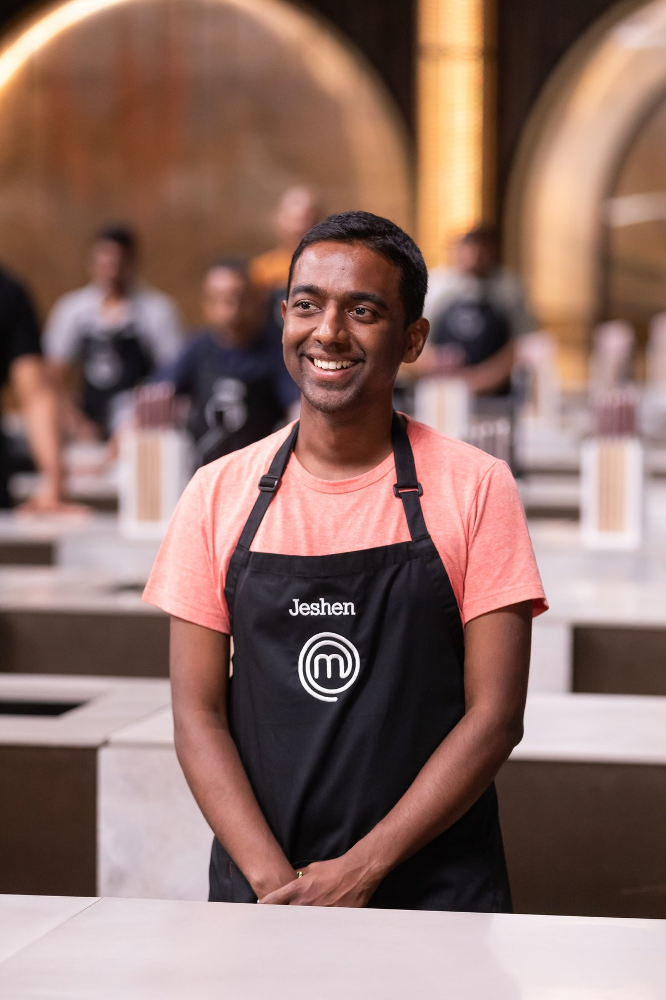
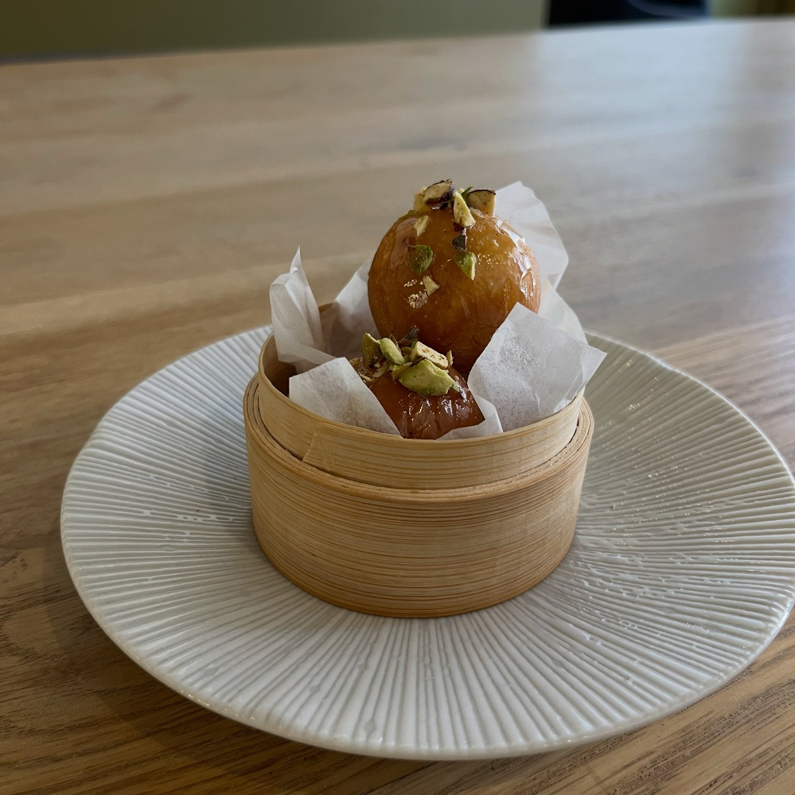
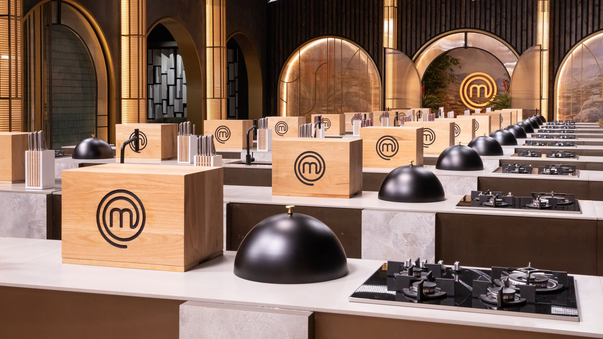

Durban foundation
Family food culture and catering roots shape the warmth and hospitality behind the brand.
MasterChef South Africa contestant · Johannesburg
Jeshen Govender’s point of view sits at the intersection of flavour, presentation, and restraint — drawing from South African Indian influence, family food culture, and a sharp eye for composition.


Family food culture and catering roots shape the warmth and hospitality behind the brand.
A food-photography eye shows up in the plating, framing, and overall sense of detail.
The identity is polished and premium, but still grounded in simplicity and flavour.
About
Raised in a close-knit Durban family where food was central to daily life, Jeshen’s connection to the kitchen began early. Time spent around his grandparents’ catering business shaped a sense of rhythm, care, and hospitality that still carries through.
Now based in Johannesburg, he brings that foundation into a more contemporary frame: food that is thoughtful without being fussy, visually refined without losing warmth, and rooted in flavour rather than performance.
The result is a personal brand that feels modern, composed, and ready for collaborations, media opportunities, intimate dining experiences, and premium culinary storytelling.


Approach
Jeshen’s style suits a premium editorial treatment because the food and the public image already communicate discipline, warmth, and visual intelligence. The site leans into that: dark neutrals, restrained typography, rich photography, and space for the imagery to do real work.
Clean structure, strong hierarchy, and minimal clutter keep the focus on the work.
Behind-the-scenes imagery adds authenticity and gives the brand substance.
The positioning works for fans, event organisers, collaborators, and brand partners.

Selected collaborations
These offerings are presented as a professional starting point for private clients, brands, event organisers, and media partners. They can be narrowed once Jeshen confirms his preferred commercial focus.
Intimate dining experiences with a polished, detail-driven point of view.
Boutique catering for refined gatherings where presentation matters as much as flavour.
Campaign work, product features, recipe development, and premium food-led partnerships.
Hosted tastings, demonstrations, and small-group experiences with a personal touch.
Guest appearances, event hosting, interviews, and editorial food features.
Visually conscious plating and collaborative content direction for digital or brand use.
Gallery
A more editorial image wall built for the way people browse now: fast scanning, strong first impressions, and full-screen viewing when a frame catches the eye.
Contact
The site is designed for GitHub Pages, so contact works through direct details plus a static-friendly enquiry flow. The recommended setup is a Google Form embed once the final questions and destination email are confirmed.
Drop in a Google Form embed URL in config.js to activate the live form panel.
Form not connected yet. Add a published Google Form embed URL to make this section live on GitHub Pages.
Open enquiry form